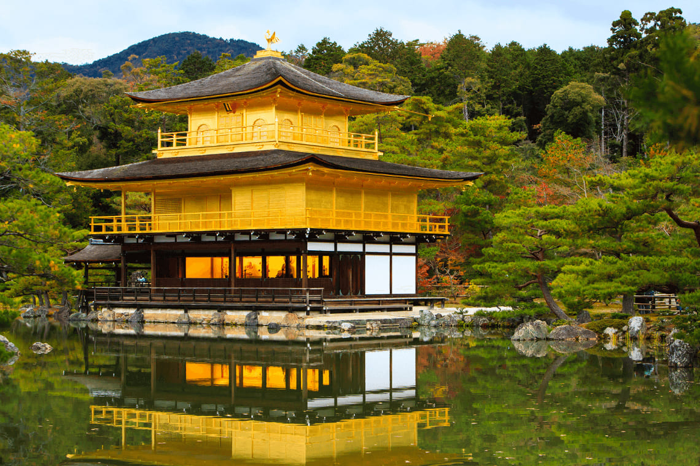

Cherry Blossom Season in Kyoto
Timing the Sakura
After three visits, I learned Kyoto's cherry blossoms typically peak last week of March/first week of April. The Japan Meteorological Corporation's annual forecast is remarkably accurate.
Best Viewing Spots
While Philosopher's Path gets crowded, hidden gems like Daigo-ji Temple offer equally stunning views with fewer people. Night illuminations at Maruyama Park are magical.
Hanami Like a Local
My Japanese friends taught me proper hanami etiquette: arrive early to claim spots, clean up thoroughly, and avoid loud noises. Convenience stores sell perfect picnic sets.
Kyoto Sakura Tips
- Book accommodations 9-12 months in advance
- Visit popular sites at sunrise
- Try sakura-flavored treats
- Combine with plum blossoms in early March